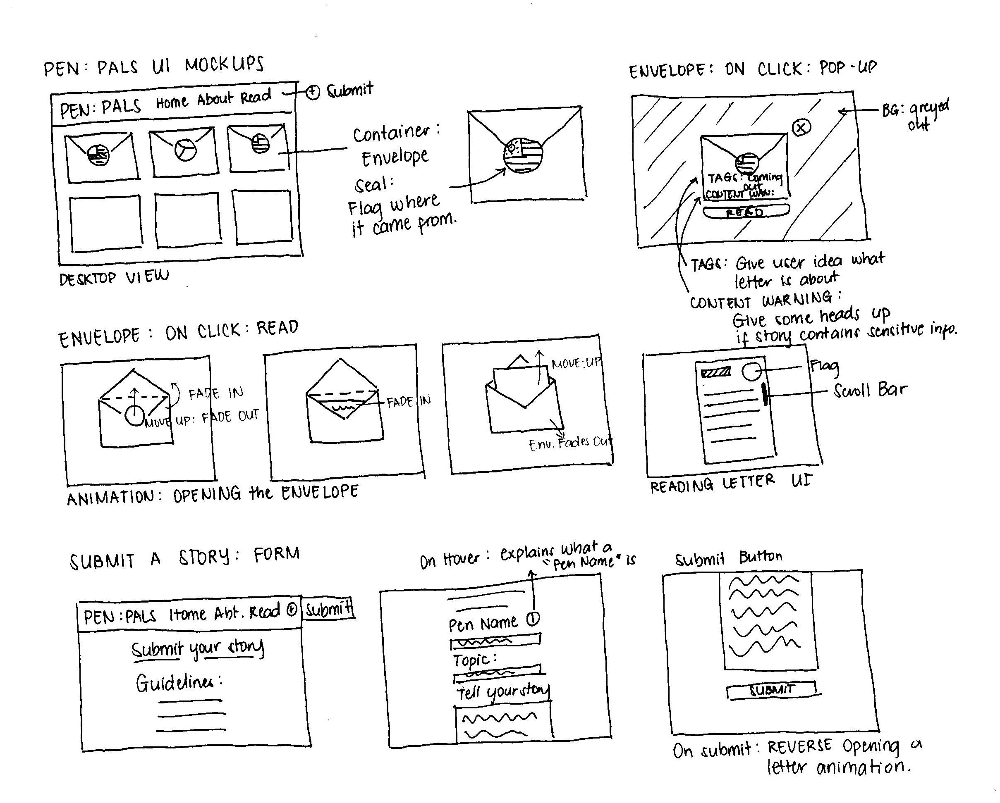

For my initial sketches, I wanted to create mockups of what the UI might look like. Originally, I wanted to go for a very simple and minimalistic UI giving the user options. However, I wanted to have more information and actions available to the user, so I opted to go for a more standard navigation bar.
For my interactivity, the user has two primary actions: to read other people's stories, and submit their own stories. When interacting with reading the stories, I wanted to incorporate animations that simulate opening or closing a letter.